Менеджер шрифтів (Font Manager), , Шрифт / / / функціонал / підсистема, Шрифтфункціонал / підсистема.
Менеджер шрифтів (Font Manager), Шрифт, Шрифт, ПринтерШрифт.
прикладний додаток, , , Менеджер шрифтів (Font Manager). ШрифтМенеджер шрифтів (Font Manager). Шрифт, Менеджер шрифтів (Font Manager), прикладний додаток, прикладний додаток.
, Менеджер шрифтів (Font Manager)ШрифтШрифт, ( / / / ) , .
Шрифт, ROM , , ШрифтМенеджер шрифтів (Font Manager).
, ШрифтШрифт 1 прикладний додаток, Менеджер шрифтів (Font Manager)функціонал / підсистема.
Шрифт ( ) , ().
Шрифт, Шрифт.
Шрифт, 12 ( 12 0 ) Шрифт. , Шрифт, Шрифт.
Шрифт, Шрифт. ШрифтШрифт.
ШрифтШрифт. Шрифт. Шрифт, , .
Шрифт, .
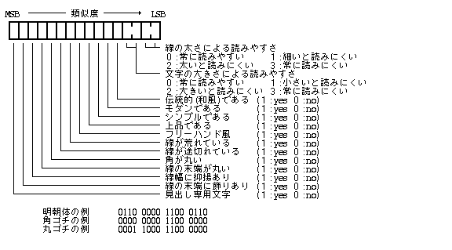
Шрифт, , , Шрифт, Шрифт, .
Шрифт, Шрифт, , ШрифтШрифт. , ID, ШрифтШрифтШрифтШрифт.
ШрифтШрифт, Шрифт, ШрифтШрифт, Шрифт. , 2 Шрифт.
FTC_DEFAULT ( = 0x80000000 ),
ШрифтШрифт.
Шрифт, Шрифт. Шрифт, Шрифт.
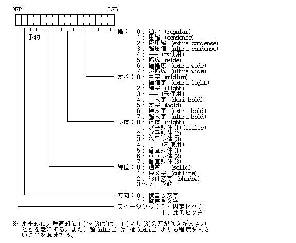
ШрифтШрифтШрифт, Шрифт 20 Шрифт. ШрифтШрифт.
ШрифтШрифт,
1 ,
.
1 2
(0, 0) 〜 (255, 255) 1 .
Шрифт. , , , , Шрифт. , .
, 1 ШрифтШрифт.
Шрифт.
：XX
24Шрифт
24Шрифт
24Шрифт
32Шрифт
32Шрифт
Шрифт()
Шрифт()
Менеджер шрифтів (Font Manager), Шрифт 1 ,
, Шрифт, Шрифт,
Шрифт.
Шрифт, ШрифтШрифт,
Шрифт, / / Шрифт.
Шрифт, Шрифт. , ШрифтШрифт, ШрифтШрифт. , Шрифт 1 , Шрифт.
Шрифт, Шрифт. , , «»Шрифт«» Шрифт, «»Шрифт, , «», «».
Шрифт, , 4 .
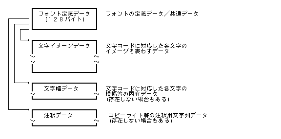
Шрифт, Шрифт, .
typedef struct {
SCRIPT script; /* () */
FCLASS fclass; /* Шрифт */
FATTR attr; /* Шрифт */
UB size; /* Шрифт () */
UB width; /* */
UB base; /* */
UB leading; /* */
TC name[12]; /* Шрифт */
FCLASS baseclass; /* Шрифт */
TC basename[12]; /* Шрифт */
TC fullname[20]; /* Шрифт */
TC topcode; /* */
TC lastcode; /* */
UB sheight; /* */
UB swidth; /* */
H rsv[2]; /* */
UB imgform; /* */
UB widform; /* */
W datasize; /* */
OFFSET offimage; /* */
OFFSET offwidth; /* */
OFFSET offnote; /* */
} FDEF;
script :
ID.
TRON 0x0021 .
fclass :
Шрифт.
1 Шрифт,
fclass .
name :
Шрифт ( ) . 12 0 .
attr :
Шрифт.
Шрифт ( ) ( 0 〜 255 ) . ШрифтШрифт 0 .
width :
( 0 〜 255 ) . Шрифт0.
base :
( ) ( 0 〜 255 ) . Шрифт 0 .
leading :
( 0 〜255 ) . Шрифт 0 .
baseclass :
ШрифтШрифт. Шрифт.
basename :
Шрифт ( ) .
12 0 .
Шрифт, 0 .
0 , Шрифт.
1 Шрифт, baseclass, basename .
fullname :
Шрифт. 200.
, .
topcode :
lastcode :
Шрифт,
. topcode ( 1 , 2 )
, lastcode ( 1 , 2 )
.
swidth :
sheight :
／ ( 1 〜 255 ) .
.
ШрифтШрифт,
Шрифт sheight : swidth : .
0, size, width .
imgform :
.
0〜63 :
0 : ()
1 : ()
2 : ()
3 : TrueType()
4〜:
64〜 :
widform :
.
0〜63 :
0 :
1 : ／
2 :
3〜:
64〜 :
datasize :
Шрифт, Шрифт, , , , .
offimage :
offwidth :
offnote :
Шрифт, ,
,
Шрифт.
0 .
.
offimage 0 〜 127 ,
.
0 , .
1 〜 127 ,
.
, ,
imgform widform ,
.
, TNULL(0) 1 .
Шрифт, Шрифт.
ШрифтШрифтID ( ≧ 0 ) .
ШрифтID 0 .
, ШрифтШрифт, Шрифт.
ШрифтШрифт, Шрифт, Шрифт, Шрифт. ШрифтШрифт.
, Шрифт 1 , , Шрифт. Шрифт, ШрифтШрифт. , Шрифт.
Шрифт, Шрифт, Шрифт 2 . Шрифт, , Шрифт, Шрифт, .
Шрифт, 2.
Шрифт, ,
Шрифт, ,
Менеджер шрифтів (Font Manager).
, FLOC , Шрифт.
typedef union {
LINK *lnk; -- Шрифт(Шрифт)
FDEF *addr; -- Шрифт(Шрифт)
} FLOC;
Шрифт, .
Шрифт, . ШрифтМенеджер шрифтів (Font Manager), .
Шрифт, Шрифт. Шрифт, Шрифт／, Шрифт. Шрифт, ШрифтШрифт, ШрифтШрифт.
Шрифт, Шрифт. ШрифтШрифт.
Шрифт, . прикладний додатокШрифт, .
Шрифт, .
FSSPEC :
name :
fclass : FTC_DEFAULT ( = 0x80000000 )
attr : 0
size : (16, 16)
angle : 0
Шрифт,
ШрифтШрифт.
, FSSPEC .
typedef struct FontSetSpecifier {
TC name[12]; /* Шрифт */
UW fclass; /* Шрифт */
UW attr; /* Шрифт */
SIZE size; /* */
} FSSPEC;
name :
ШрифтШрифт. Шрифт, .
fclass :
name Шрифт,
ШрифтШрифт.
, fclass FTC_DEFAULT ( = 0x80000000 ) ,
ШрифтШрифт.
attr :
ШрифтШрифт.
size :
Шрифт.
size.c.v -- Шрифт size.c.h -- Шрифт
name Шрифт,
.
fclass Шрифт.
ШрифтШрифт,
name ,
fclass FTC_DEFAULT ( 0x80000000 ) .
Шрифт,
ШрифтШрифтШрифт,
name Шрифт,
Шрифт FTC_DEFAULT ( 0x80000000 ) .
, Шрифт, , . .
Шрифт, ШрифтШрифт.
Шрифт, ШрифтШрифт, ШрифтШрифтШрифт, Шрифт.
Шрифт, Шрифт.
Шрифт, ШрифтШрифт／ШрифтШрифт.
, , ／／Шрифт.
Шрифт, .
Шрифт, Шрифт, Шрифт, 2 ШрифтШрифт.
ШрифтШрифт, ШрифтШрифт.
ШрифтШрифт, 3 〜 6 .
Шрифт, ШрифтШрифт, 3 ШрифтШрифт.
ШрифтШрифт, 3 〜 6 .
ШрифтШрифт, . Менеджер шрифтів (Font Manager).
Шрифт, .
, . , 0 〜 , 360 .
Менеджер шрифтів (Font Manager), Шрифт, , .
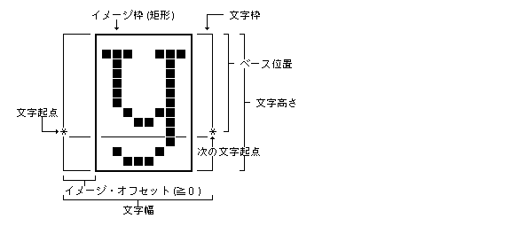
, 1,
, .
Шрифт ( size ),
( width ) Шрифт.
, , Шрифт. , 0 , , 0 .
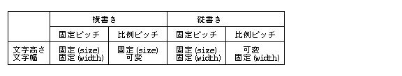
, , . , Шрифт. .
, .
, .
／.
( kerning )
( 131 : Шрифт2).
, .
, . . , .
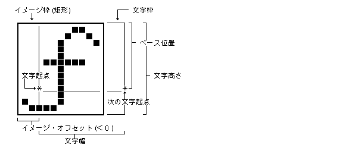
Менеджер шрифтів (Font Manager), Шрифт, , , , , , , .
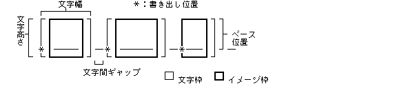
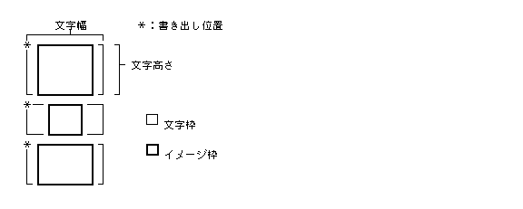
ШрифтШрифт, , .
Шрифт, Шрифт, , , / / / .
Шрифт, Менеджер шрифтів (Font Manager). Шрифт, Менеджер шрифтів (Font Manager) / . Менеджер шрифтів (Font Manager) / .
2 .
typedef struct {
RECT frame; /* */
H width; /* */
H height; /* */
PNT imgofs; /* */
UH family; /* Шрифт */
UH fid; /* ШрифтID */
} FCDATA;
typedef struct { /* */
UW attr; /* Шрифт */
UH height; /* */
UH width; /* */
UH base; /* */
UH leading; /* */
H fkind; /* */
H fslope; /* */
H fweight; /* */
H fwidth; /* */
H rowbytes; /* */
UH resv; /* */
SIZE asize; /* Шрифт */
UH aangle; /* Шрифт */
UH pixbits; /* */
UB *image; /* */
FCDATA ch[1]; /* */
} FDATA;
rowbytes :
,
.
, ／, .
pixbits :
.
0x0101.
,
0x0808 ( 256 ) .
, / ,
.
image :
.
, = 1 ,
( 0, 0 ).
Шрифт, ,
.
, / , .
attr :
Шрифт. ШрифтШрифт.
height :
width :
base :
leading :
Шрифт ( Шрифт ),
, , .
Шрифт, asize / .
ШрифтШрифт,
ШрифтШрифт.
asize :
.
,
Шрифт size asize /
.
, / .
size.c.v / asize.c.v --
size.c.h / asize.c.h --
aangle :
.
,
Шрифт angle aangle .
fkind :
fslope :
fweight :
fwid :
.
, ШрифтШрифтШрифт
( attr ) ,
Шрифт.
, asize / .
0 , .
fkind :
>0, ,
,
8 ,
8 ( 7 ) .
, ,
, .
< 0 ,
,
.
fslope :
> 0 ,
.
< 0 ,
.
fweight :
> 0 ( ) ,
< 0 ( ) .
, ,
.
fwid :
> 0 ,
< 0, .
ch :
,
, .
, Шрифт,
asize, fweight ,
inf ,
.
frame :
image, rowbytes, pixbits
.
, 1 ,
Шрифт,
1 .
, ,
lefttop = rightbot ,
lefttop .
, / , .
width :
height :
, , . , . , ／. .
imgofs :
.
,
( frame ) .
, / , .
family :
Шрифт.
0 : Шрифт
1 : Шрифт()
2 : Шрифт
3 : Шрифт()
4 : Шрифт
-1 :
fid: ШрифтID.
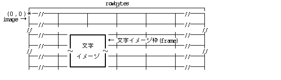
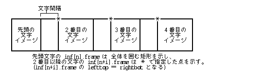
typedef struct ExtendFontSpecifier {
TC name[12]; /* Шрифт */
UW fclass; /* Шрифт */
UW attr; /* Шрифт */
SIZE size; /* */
} FSSPEC;
/* Шрифт： */
#define FT_REGULAR 000000 /* : regular */
#define FT_COND 000001 /* : condense */
#define FT_XCOND 000002 /* : extra condense */
#define FT_UCOND 000003 /* : ultra condense */
#define FT_WIDE 000005 /* : wide */
#define FT_XWIDE 000006 /* : extra wide */
#define FT_UWIDE 000007 /* : ultra wide */
/* Шрифт： */
#define FT_MIDI 000000 /* : midium */
#define FT_XLIGHT 000010 /* : extra light */
#define FT_LIGHT 000020 /* : light */
#define FT_DBOLD 000040 /* : demi bold */
#define FT_BOLD 000050 /* : bold */
#define FT_XBOLD 000060 /* : extra bold */
#define FT_UBOLD 000070 /* : ultra bold */
/* Шрифт： */
#define FT_RIGHT 000000 /* : right */
#define FT_HSLOPE1 000100 /* : italic */
#define FT_HSLOPE2 000200 /* */
#define FT_HSLOPE3 000300 /* */
#define FT_VSLOPE1 000500 /* */
#define FT_VSLOPE2 000600 /* */
#define FT_VSLOPE3 000700 /* */
/* Шрифт： */
#define FT_SOLID 000000 /* : solid */
#define FT_OUTLINE 001000 /* : out line */
#define FT_SHADOW 002000 /* : shadow */
#define FT_WSHADOW 003000 /* : white shadow */
/* Шрифт： */
/* FontDirectionAttribute */
#define FT_HDRAW 0x0000 /* */
#define FT_VDRAW 0x4000 /* */
/* Шрифт： */
#define FT_FIXED 0x0000 /* */
#define FT_PROP 0x8000 /* */
/* Шрифт： */
#define FT_BW 0x0000 /* */
#define FT_GRAYSCALE 0x10000 /* */
/* Шрифт */
typedef struct {
SCRIPT script; /* () */
FCLASS fclass; /* Шрифт */
FATTR attr; /* Шрифт */
UB size; /* Шрифт () */
UB width; /* */
UB base; /* */
UB leading; /* */
TC name[12]; /* Шрифт() */
FCLASS baseclass; /* Шрифт */
TC basename[12]; /* Шрифт() */
TC fullname[20]; /* Шрифт */
TC topcode; /* */
TC lastcode; /* */
H rsv[3]; /* */
UB imgform; /* */
UB widform; /* */
W datasize; /* */
OFFSET offimage; /* */
OFFSET offwidth; /* */
OFFSET offnote; /* */
} FDEF;
/* */
#define FT_FIXIMG 0 /* */
#define FT_VALIMG 1 /* */
#define FT_VECTOR 2 /* () */
#define FT_TRUETYPE 3 /* TrueType */
/* */
#define FT_SIMPLEWDATA 0 /* */
#define FT_INDEXWDATA 1 /* ／ */
#define FT_IMGWDATA 2 /* */
/* Шрифт */
#define FT_MEM 0 /* Шрифт */
#define FT_FILE 1 /* Шрифт */
#define FT_SYSTEM 2 /* Шрифт */
/* Шрифт */
typedef union {
LINK *lnk; /* ШрифтРеальний об'єкт (Real Object)(Шрифт) */
FDEF *addr; /* Шрифт (Шрифт) */
} FLOC;
/* Шрифт */
#define FT_RES 0x0100 /* */
/* Шрифт */
#define FT_FONT 0 /* Шрифт */
#define FT_SCALL 1 /* */
#define FT_SCFAMILY 2 /*
Шрифт */
#define FT_LOC 3 /* */
#define FT_ALL -1 /* */
#define FT_FAMILY -2 /* Шрифт */
/* Шрифт */
#define FTC_MINCHO 0x000060c6
#define FTC_DEFAULT 0x80000000
/* */
#define FT_IDXNONE 0 /* */
#define FT_IDXINDIRECT 1 /* */
/* Шрифт */
typedef struct {
FID fid; /* ШрифтID */
SCRIPT script; /* () */
FCLASS fclass; /* Шрифт */
FATTR attr; /* Шрифт */
UB size; /* Шрифт */
UB width; /* */
UB base; /* */
UB leading; /* */
TC name[12]; /* Шрифт() */
H swidth; /* */
H sheight; /* */
} FLIST;
/* */
typedef struct {
RECT frame; /* */
H width; /* */
H height; /* */
PNT imgofs; /* */
UH family; /* Шрифт */
UH fid; /* ШрифтID */
} FCDATA;
/* Шрифт */
#define FT_TARGET 0 /* Шрифт */
#define FT_ALTTARGET 1 /* Шрифт() */
#define FT_BASE 2 /* Шрифт */
#define FT_ALTBASE 3 /* Шрифт() */
#define FT_DEFAULT 4 /* Шрифт */
#define FT_UNDEF -1 /* */
/* */
typedef struct {
UW attr; /* Шрифт */
UH height; /* */
UH width; /* */
UH base; /* */
UH leading; /* */
H fkind; /* */
H fslope; /* */
H fweight; /* */
H fwidth; /* */
H rowbytes; /* */
UH resv; /* */
SIZE asize; /* Шрифт */
UH aangle; /* Шрифт */
UH pixbits; /* */
UB *image; /* */
FCDATA ch[1]; /* */
} FDATA;
/* fget_img() */
#define FT_IMAGE 0x00000001 /* */
#define FT_SYS 0x00000002 /* () */
/* Шрифт */
/* */
typedef struct {
UB height; /* */
UB width; /* */
H rowbytes; /* */
H margin; /* */
UH offset; /* */
} FIDATA;
/* */
typedef struct {
UB height; /* */
UB width; /* */
H rowbytes; /* */
UH offset; /* */
UH pos[1]; /* */
} VIDATA;
/* */
typedef union {
FIDATA fidata; /* */
VIDATA vidata; /* */
} IMGH;
/* ／ */
typedef struct {
B offset; /* */
UB hw; /* ／ */
} HW;
/* */
typedef struct {
UH s; /* */
UH e; /* */
H hwdata[1]; /* ／ */
} WDATA;
/* */
typedef struct {
UB widform; /* */
UB idxform; /* */
UB rsv[2]; /* */
OFFSET offwidth; /* */
OFFSET offidxtable; /* */
} IDXWDATA;
/* */
typedef struct {
UH s; /* */
UH e; /* */
struct _imgwd {
B offset; /* */
UB hw; /* () */
UB imghw; /* () */
} i[1];
} IMGWDATA;
|
WERR fdef_fnt(FLOC loc, W spec)
FLOC loc Шрифт
W spec ::= ( FT_MEM ‖ FT_FILE ) | ( FT_RES ) | ( FT_SYSTEM )
FT_MEM : loc Шрифт
FT_FILE : loc Шрифт.
FT_RES : Шрифт.
FT_SYSTEM : Шрифт.
>= 0 Успішне виконання(ШрифтID) < 0 Помилка (Код помилки)
Виконує системну операцію даного виклику підсистеми оболонки BTRON Shell згідно з переданими параметрами.
loc Шрифт,
ШрифтID.
, ШрифтШрифт. Шрифт, Шрифт, ШрифтID.
FT_RES ,
ШрифтШрифт.
ШрифтШрифт,
.
Шрифт.
, EX_NOSPC Помилка, .
FT_SYSTEM ,
ШрифтШрифт.
ШрифтШрифт, .
Шрифт,
, ШрифтID.
, Шрифт,
, EX_FTFMT Помилка.
EX_ADR : (loc.addr). EX_FONT : Шрифт. EX_FTFMT : Шрифт／. EX_FTID : ШрифтID/Шрифт. EX_LIMIT : (). EX_NOSPC : . EX_PAR : (spec).
|
ERR fdel_fnt(FID fid)
FID fid ШрифтID
= 0 Успішне виконання < 0 Помилка (Код помилки)
Виконує системну операцію даного виклику підсистеми оболонки BTRON Shell згідно з переданими параметрами.
fid Шрифт, ., Шрифт, , .
fid <0 ,
ШрифтШрифт.
EX_FTID : ШрифтID／Шрифт.
|
WERR fdel_loc(FLOC loc, W spec)
FLOC loc Шрифт
W spec ::= ( FT_MEM ‖ FT_FILE )
FT_MEM : loc Шрифт
FT_FILE : loc Шрифт.
>= 0 Успішне виконання(Шрифт) < 0 Помилка (Код помилки)
Виконує системну операцію даного виклику підсистеми оболонки BTRON Shell згідно з переданими параметрами.
loc Шрифт,
.
, ШрифтШрифт. Шрифт.
, Шрифт, , .
Шрифт. , 0 .
EX_ADR : (loc.addr). EX_PAR : (spec).
|
WERR fget_def(FID fid, FDEF *def)
FID fid ШрифтID FDEF *def Шрифт
>= 0 Успішне виконання( FT_FILE | FT_MEM) < 0 Помилка (Код помилки)
Виконує системну операцію даного виклику підсистеми оболонки BTRON Shell згідно з переданими параметрами.
fid Шрифт,
def .
def .
def
FDEF
offimage, offwidth, offnote
, .
EX_ADR : (buff). EX_FTID : ШрифтID / Шрифт.
|
WERR fget_not(FID fid, B *buff, UW len)
FID fid ШрифтID B *buff UW len buff
>= 0 Успішне виконання() < 0 Помилка (Код помилки)
Виконує системну операцію даного виклику підсистеми оболонки BTRON Shell згідно з переданими параметрами.
fid Шрифт ( ) ,
buff .
len buff ,
len len ,
TNULL .
. 0 , .
buff = NULL,
len = 0 ,
, .
EX_ADR : (buff). EX_FTID : ШрифтID／Шрифт. EX_PAR : (len<0).
|
WERR flst_fon(FID fid, W mode, FLIST *buff, UW len)
FID fid ШрифтID W mode Шрифт
FT_FONT (0) :
fid ШрифтШрифтШрифт
( Шрифт ) .
FT_ALL (-1) :
Шрифт. fid .
FT_FAMILY(-2) :
Шрифт
( Шрифт 1 Шрифт).
fid .
FT_SCALL (1) :
fid ШрифтШрифт.
FT_SCFAMILY(2) :
fid Шрифт,
Шрифт
( Шрифт 1 Шрифт ).
FT_LOC (3) :
fid ШрифтШрифт.
FLIST *buff Шрифт UW len buff
>= 0 Успішне виконання(Шрифт) < 0 Помилка (Код помилки)
Виконує системну операцію даного виклику підсистеми оболонки BTRON Shell згідно з переданими параметрами.
Шрифт,fid, mode Шрифт,
buff .
, Шрифт.
Шрифт,
len , len .
buff = NULL, len = 0
,
Шрифт.
EX_ADR : (buff). EX_FTID : ШрифтID／Шрифт. EX_PAR : (len<0, mode).
|
WERR fopn_fon()
>= 0 Успішне виконання(Шрифт) < 0 Помилка (Код помилки)
Виконує системну операцію даного виклику підсистеми оболонки BTRON Shell згідно з переданими параметрами.
Шрифт. Шрифт.EX_NOMEM : .
|
ERR fcls_fon(W fdesc)
W fdesc Шрифт
= 0 Успішне виконання < 0 Помилка (Код помилки)
Виконує системну операцію даного виклику підсистеми оболонки BTRON Shell згідно з переданими параметрами.
fdesc Шрифт.
EX_FTD : Шрифт.
|
ERR fset_fon(W fdesc, FSSPEC *spec)
W fdesc Шрифт FSSPEC *spec Шрифт
= 0 Успішне виконання < 0 Помилка (Код помилки)
Виконує системну операцію даного виклику підсистеми оболонки BTRON Shell згідно з переданими параметрами.
fdesc Шрифт
*spec Шрифт
(Шрифт, , ).
EX_ADR : (fspec). EX_FTD : Шрифт. EX_PAR : ().
|
ERR fget_fon(W fdesc, FSSPEC *spec)
W fdesc Шрифт FSSPEC *spec Шрифт
= 0 Успішне виконання < 0 Помилка (Код помилки)
Виконує системну операцію даного виклику підсистеми оболонки BTRON Shell згідно з переданими параметрами.
fdesc ШрифтШрифт,
*spec .
EX_ADR : (fspec). EX_FTD : Шрифт.
|
ERR fset_ang(W fdesc, W ang);
W fdesc Шрифт W ang
= 0 Успішне виконання < 0 Помилка (Код помилки)
Виконує системну операцію даного виклику підсистеми оболонки BTRON Shell згідно з переданими параметрами.
fdesc Шрифт.
EX_FTD : Шрифт. EX_PAR : (ang).
|
WERR fget_ang(W fdesc);
W fdesc Шрифт
>= 0 Успішне виконання() < 0 Помилка (Код помилки)
Виконує системну операцію даного виклику підсистеми оболонки BTRON Shell згідно з переданими параметрами.
fdesc Шрифт
( 0 〜 359 ) .
EX_FTD : Шрифт.
|
WERR fget_fam(W fdesc, W script, FNTINFO *inf);
>= 0 Успішне виконання(ШрифтID) < 0 Помилка (Код помилки)
Виконує системну операцію даного виклику підсистеми оболонки BTRON Shell згідно з переданими параметрами.
Шрифт,script ШрифтШрифт
inf .
inf,
FSSPEC .
, ШрифтШрифт, Шрифт.
Шрифт,
fget_fam() Шрифт fget_img()
Шрифт.
scriptШрифт,
EX_FTIDПомилка.
inf .
EX_ADR : (inf). EX_FTID : ШрифтID／Шрифт. EX_FTD : Шрифт.
|
WERR fget_img(W fdesc, FDATA *cimg, W size, W script, TC ch, UW mode)
W fdesc Шрифт FDATA *cimg W size cimg W script TC ch W mode
mode & FT_IMAGE = 0 :
ch
( , / ) .
mode & FT_IMAGE != 0 :
ch .
mode & FT_SYS = 0 :
cimg .
mode & FT_SYS != 0 :
.
>= 0 Успішне виконання( ( = 1 ) ) < 0 Помилка (Код помилки)
fdesc Шрифт,
script ,
ch ,
cimg .
1 .
cimg FDATA ,
inf 1 .
size sizeof ( FDATA )
Помилка ( EX_PAR ) ,
.
mode & FT_IMAGE = 0,
cimg
rowbytes, pixbits, image,ch[].frame, ch[].imgofs
image .
mode & FT_IMAGE != 0 ,
cimg FDATA
.
size Помилка
( EX_PAR ) .
mode & FT_SYS != 0 ,
, Менеджер шрифтів (Font Manager).
Шрифт.
прикладний додаток FT_SYS .
script Шрифт,
Помилка, .
EX_ADR : (cimg). EX_FTD : Шрифт. EX_PAR : (size). EX_NOSPC : .
Шрифт, Шрифт, , .
Шрифт, Шрифт, Шрифт.
, Шрифт 11 ( Шрифт ) , 15 〜 31 ( / прикладний додаток ) .
ШрифтШрифт, ШрифтШрифт. ШрифтШрифт, Шрифт, Шрифт, ШрифтШрифт.
Шрифт, Шрифт.
,
Шрифт offimage 0 〜 127 ,
15 〜 31 ( / прикладний додаток ) .
, .
TrueType , . , Шрифт.
2.
, .
.
, , .
( rowbytes × 8 - margin ) ÷ width ,
.
offset .
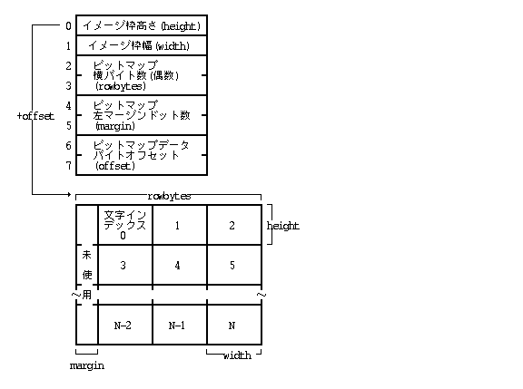
TrueType .
TrueType Apple Computer, Inc .
, Шрифт ( ) , .
Шрифт, 1 . , , 0 .
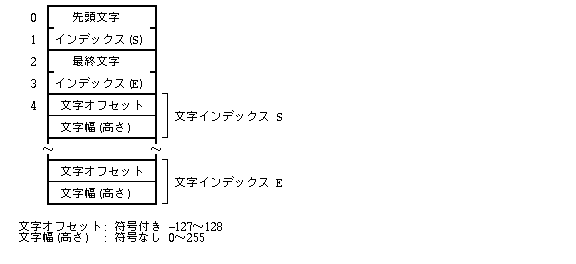
, Шрифт ( ) , ( ) , .
Шрифт, 1 . , , 0 , .
.
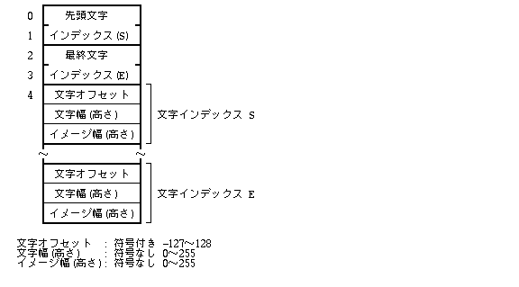
／, . .
, ／, .
, , , , ／.
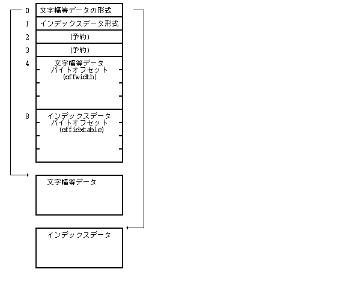
, , . , .
, Шрифт,
.
, 0xffff , .
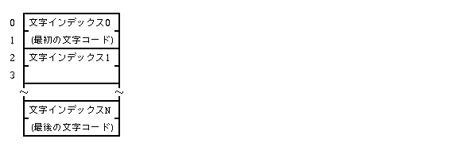